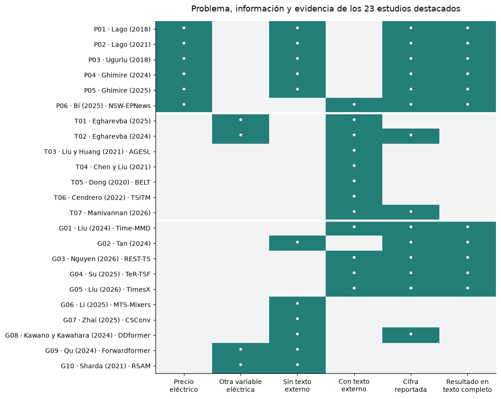
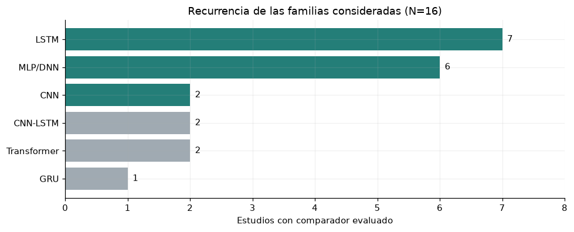

9. Literatura: estudios relevantes y selección de modelos#
La síntesis compara 23 estudios según su proximidad al pronóstico eléctrico colombiano: precio de energía, información textual transferible y métodos generales de series temporales. TC identifica resultados contrastados en texto completo; A, resultados declarados en el abstract. Se destacan once estudios TC y doce A.
El origen institucional corresponde a afiliaciones verificadas de los autores; puede ser parcial en equipos multicéntricos y no indica nacionalidad ni sede del congreso. El territorio de los datos se informa por separado. Las métricas conservan su caso, escala y horizonte: no forman un ranking de precisión entre artículos. «Sin cifra» significa que el abstract no comunica un valor, no que el estudio carezca de resultados.
9.1 Comparación de los estudios prioritarios#
Precio eléctrico#
Estos trabajos proporcionan evidencia directa para las referencias numéricas y para evaluar la incorporación de noticias al precio de energía.
Estudio y fuente |
Origen institucional |
País / caso de estudio |
Modelo o aporte propuesto |
Resultado principal |
|---|---|---|---|---|
P01 · Lago et al. (2018) · TC |
Bélgica · precio day-ahead |
DNN, LSTM/GRU con capa densa y CNN de dos ramas |
sMAPE: DNN 12,34 %; MLP de referencia 13,27 %. |
|
P02 · Lago et al. (2021) · TC |
Nord Pool, EE. UU., Bélgica, Francia y Alemania |
Benchmark abierto DNN (dos capas ocultas) y LEAR |
Nord Pool, MAE: DNN3 1,712; LEAR84 1,952 (escala del mercado). |
|
P03 · Ugurlu et al. (2018) · TC |
Turquía · precio day-ahead |
GRU de tres capas; compara ANN, LSTM y CNN |
Mejor MAE de GRU multicapa: 5,36 EUR/MWh. |
|
P04 · Ghimire et al. (2024) · TC |
Australia · Queensland, media hora |
VMD–CNN/LSTM con compensación residual VMD–RF |
DS1, MAE: propuesto 3,057; LSTM 22,781 AUD/MWh. |
|
P05 · Ghimire et al. (2025) · TC |
Australia · South Australia y Tasmania |
D3Net: STL/VMD con MLP, RF y TabNet |
South Australia, MAE: D3Net 3,051; MLP 13,189 AUD/MWh. |
|
P06 · Bi et al. (2025) · NSW-EPNews · TC |
Australia · New South Wales 2015–2024 |
Benchmark de precios, noticias y temperatura con ML/LLM |
Tramo reciente 50 %, MAE: ARIMA 54,579; GPT-4o 53,646; ablación 52,713 AUD/MWh. |
Texto operativo y financiero#
Los estudios de pérdidas de transmisión ofrecen la analogía más cercana a los informes de XM. Los de petróleo, acciones y ventas aportan mecanismos de fusión; sus resultados requieren validación en el objetivo colombiano.
Estudio y fuente |
Origen institucional |
País / caso de estudio |
Modelo o aporte propuesto |
Resultado principal |
|---|---|---|---|---|
T01 · Egharevba et al. (2025) · A |
Canadá · pérdidas en Alberta; IEEE-118 sintético |
Predicción inicial + refinamiento por clusters; informes de desconexiones |
Mejora frente a benchmarks; el abstract no da cifras. |
|
T02 · Egharevba et al. (2024) · A |
Canadá · pérdidas de transmisión en Alberta |
Sentimiento con LLM sobre comentarios del operador + predictor |
Mejora de precisión declarada de 2–3 %, según modelo/experimento. |
|
T03 · Liu y Huang (2021) · AGESL · A |
EE. UU. · petróleo WTI |
Eventos de noticias + sentimiento + red profunda de fusión |
Supera comparadores; el abstract no cuantifica la mejora. |
|
T04 · Chen y Liu (2021) · A |
EE. UU. · dirección de retornos DJIA |
Atención jerárquica (HAN) para noticias + LSTM temporal |
Mejora en clasificación frente a módulos aislados y Bag of Words; sin cifra. |
|
T05 · Dong et al. (2020) · BELT · A |
Acciones y noticias de Twitter; país no explicitado en el abstract |
BERT ajustado + LSTM apilada many-to-many |
Supera historia sola y StockNet; sin magnitud en el abstract. |
|
T06 · Cendrero et al. (2022) · TSITM · A |
EE. UU. · desaprobación presidencial; retornos de cuatro empresas |
LDA acoplada a regresión con prior elastic net |
Mejora MSE, MAE y R² según autores; sin valores en el abstract. |
|
T07 · Manivannan et al. (2026) · A |
No verificado |
Ventas: 3000 productos y 12 meses; país no especificado |
BART/LoRA + BGE M3 + Transformer con ponderación dinámica |
≈20 % menos MAE/RMSE; mejora cold-start ≈79 %, declaradas en abstract. |
Métodos generales y evaluación multimodal#
Estas referencias permiten contrastar eficiencia, dependencia temporal, fusión documental y calidad de la evaluación.
Estudio y fuente |
Origen institucional |
País / caso de estudio |
Modelo o aporte propuesto |
Resultado principal |
|---|---|---|---|---|
G01 · Liu et al. (2024) · Time-MMD · TC |
Time-MMD · Energy: gasolina semanal; varios dominios |
Dataset multimodal y MM-TSFlib; DLinear numérico/multimodal |
Energy, H=12, MSE: 0,26 numérico; 0,22 multimodal. |
|
G02 · Tan et al. (2024) · TC |
ETTh1 y otros benchmarks numéricos |
Ablaciones de modelos de lenguaje para series, incluido Time-LLM |
ETTh1, MSE: Time-LLM 0,417; sin LLM 0,405. |
|
G03 · Nguyen et al. (2026) · REST-TS · TC |
Time-MMD y TimeBridge; Energy y Traffic |
Rama numérica + texto supervisado exclusivamente sobre residuos |
MSE, TaTS→REST-TS: Energy 0,297→0,261; Traffic 0,160→0,175. |
|
G04 · Su et al. (2025) · TeR-TSF · TC |
Time-MMD · promedio entre dominios |
Texto reforzado mediante aprendizaje por refuerzo + forecaster multimodal |
MSE: solo serie 0,771; TeR-TSF 0,631 (promedios reportados). |
|
G05 · Liu et al. (2026) · TimesX · TC |
TimesX · benchmark de varios dominios |
Benchmark de contextos y evaluación de pronóstico multimodal |
MASE geométrica agregada: contexto original 0,906; contexto de autores 0,840. |
|
G06 · Li et al. (2025) · MTS-Mixers · A |
Benchmark multivariado; geografía no detallada en abstract |
Mezcla temporal y de canales factorizada |
Resultados competitivos y mayor eficiencia; sin cifras en el abstract. |
|
G07 · Zhai et al. (2025) · CSConv · A |
No verificado |
Ocho datasets; países no especificados en abstract |
Filtrado espectral cruzado + convolución causal dilatada + MLP |
Resultados competitivos; sin cifras en el abstract. |
G08 · Kawano y Kawahara (2024) · DDformer · A |
Energía, finanzas y clima; países no detallados en abstract |
Transformer con descomposición y expansión/reducción dimensional |
Hasta 45,9 % menos error frente a FEDformer, según abstract. |
|
G09 · Qu et al. (2024) · Forwardformer · A |
China y EE. UU. · demanda day-ahead |
Atención multiescala; encoder y doble decoder |
Mejor precisión y menor tiempo declarados; sin cifras en abstract. |
|
G10 · Sharda et al. (2021) · RSAM · A |
Dos sitios NREL; país no explicitado en abstract |
Transformer multihorizonte + regresión cuantílica |
Supera RNN en RMSE/MAE/MBE/skill; sin valores en abstract. |
%matplotlib inline
from pathlib import Path
ROOT = next(
directory for directory in [Path.cwd(), *Path.cwd().parents]
if (directory / "data/manifest.json").exists()
)
from IPython.display import Markdown, display
import pandas as pd
import matplotlib.pyplot as plt
RESULTS = ROOT / 'results'
RESULTS.mkdir(exist_ok=True)
(RESULTS / 'figures').mkdir(exist_ok=True)
(RESULTS / 'tables').mkdir(exist_ok=True)
plt.rcParams.update({'figure.figsize': (11, 4.4), 'figure.dpi': 110, 'savefig.dpi': 160, 'axes.spines.top': False, 'axes.spines.right': False, 'axes.grid': True, 'grid.alpha': 0.18, 'axes.prop_cycle': plt.cycler(color=['#245b8d', '#d17a32', '#2b8c77', '#8c5da8', '#9a4949'])})
pd.set_option('display.max_rows', 35)
pd.set_option('display.max_columns', 14)
pd.set_option('display.float_format', lambda x: f'{x:.5g}')
import json
from matplotlib.colors import ListedColormap
catalog = pd.read_csv(ROOT / 'literature/consolidated/relevant_studies.csv', keep_default_na=False)
assert catalog.study_id.is_unique and catalog.source_id.is_unique
assert len(catalog) == 23 and catalog.fulltext_result.sum() == 11
order = {'Precio eléctrico': 0, 'Texto operativo y financiero': 1, 'Métodos generales': 2}
catalog['group_order'] = catalog['group'].map(order)
catalog = catalog.sort_values(['group_order', 'study_id'])
catalog['no_external_text'] = 1 - catalog['external_text']
matrix_columns = ['electricity_price', 'other_electricity_variable', 'no_external_text', 'external_text', 'numeric_result', 'fulltext_result']
evidence_matrix = catalog.set_index('study_id')[matrix_columns]
evidence_matrix.to_csv(RESULTS / 'tables/literatura_matriz_evidencia_consolidada.csv')
Lectura conjunta de la evidencia#
La figura identifica el problema y el tipo de evidencia de cada trabajo. Una marca indica un atributo documentado; su ausencia significa que no se describe o no aplica. «Cifra reportada» incluye porcentajes declarados en abstracts y no califica su validez. La matriz distingue uso de texto externo de arquitecturas simplemente inspiradas en NLP.
fig, ax = plt.subplots(figsize=(10, 8))
ax.imshow(evidence_matrix.to_numpy(), aspect='auto', vmin=0, vmax=1, cmap=ListedColormap(['#f1f3f5', '#247e78']))
ax.set_xticks(range(6), ['Precio\neléctrico', 'Otra variable\neléctrica', 'Sin texto\nexterno', 'Con texto\nexterno', 'Cifra\nreportada', 'Resultado en\ntexto completo'], fontsize=9)
labels = [r.study_id + ' · ' + r.reference.replace(' et al.', '') for r in catalog.itertuples()]
ax.set_yticks(range(len(catalog)), labels, fontsize=9)
for i in range(len(catalog)):
for j, value in enumerate(evidence_matrix.iloc[i]):
if value:
ax.text(j, i, '•', ha='center', va='center', color='white', fontsize=14)
for cut in [5.5, 12.5]:
ax.axhline(cut, color='white', lw=3)
ax.grid(False)
ax.set_title('Problema, información y evidencia de los 23 estudios destacados', pad=14)
figure(fig, 'literatura_mapa_evidencia_consolidado')

Interpretación. Seis de los 23 estudios destacados tratan directamente precio eléctrico; los demás aportan mecanismos transferibles o evidencia de otros problemas. La matriz distingue once resultados revisados en texto completo y doce procedentes de abstracts, delimitando el soporte de cada comparación.
9.2 Síntesis para el diseño del proyecto#
Precio y texto. NSW-EPNews (P06) es la referencia más próxima al objetivo, pero su ablación retira simultáneamente noticias y temperatura. Los trabajos de pérdidas (T01–T02) motivan priorizar anuncios operativos con publicación anterior al evento. En ambos casos, el aporte textual debe contrastarse manteniendo constantes las entradas numéricas.
Beneficio condicionado. REST-TS (G03) mejora Energy y empeora Traffic en los casos extraídos. Tan et al. (G02) muestran que retirar un LLM puede mejorar un modelo numérico, mientras TeR-TSF y TimesX (G04–G05) muestran sensibilidad al contenido y a su construcción. Esta evidencia justifica ablaciones de contenido, procedencia y arquitectura, sin anticipar una mejora universal por NLP.
Línea de evaluación |
Referencias principales |
Modelo o mecanismo de interés |
Propósito |
|---|---|---|---|
Referencias numéricas |
P01–P05 |
MLP, LSTM, CNN1D |
Comparar interacciones densas, memoria y patrones locales |
Eficiencia y multiescala |
G06–G09 |
MTS-Mixers, CSConv, DDformer, Forwardformer |
Contrastar mezcla de canales, convolución causal y atención |
Fusión documental |
T03–T05 |
Eventos + red profunda; HAN–LSTM; BERT–LSTM |
Aprender representación y relevancia sin categorías manuales |
Cobertura textual variable |
T07; G03 |
Ponderación dinámica; supervisión residual |
Evitar dependencia espuria del volumen de noticias y text collapse |
Control interpretable e incertidumbre |
T06; G10 |
LDA–elastic net; regresión cuantílica |
Contrastar complejidad e incorporar calibración de intervalos |
La validación será cronológica. Descomposición, espectro, vocabulario, agrupamientos y escalado se estiman con el pasado disponible en cada fold. Atención no demuestra causalidad; una mejora bursátil o de demanda no acredita mejora del precio eléctrico. Las publicaciones sin configuración suficiente requieren lectura completa antes de definir su implementación.
Criterio del benchmark. El proyecto adopta MAE en COP/kWh como métrica principal. Ugurlu et al. (P03, §4.1) lo emplean para comparar los pronósticos; Lago et al. (P02, §§5.4–5.4.2) fundamentan las pérdidas lineales y recomiendan una referencia relativa. La elección conserva interpretación en la unidad del objetivo y coherencia con la pérdida absoluta de entrenamiento. La comparación semanal existente complementa el MAE; RMSE y R² describen aspectos secundarios del desempeño. Lago et al. también advierten que los errores absolutos dependen de la escala y del periodo, por lo que no se utilizan para ordenar mercados diferentes ni para atribuir una mejora al comparar validación y prueba de configuraciones distintas. La definición operativa se presenta en la sección 8.2.
9.3 Justificación de las tres referencias numéricas#
La frecuencia se calcula en 16 estudios puntuales de precio eléctrico con texto completo, contando cada familia una vez por estudio y sólo cuando actúa como comparador evaluado. Propuestas, componentes y ablaciones se excluyen. MLP y DNN simples se agrupan; los híbridos mantienen su identidad. Los abstracts IEEE no incrementan estos conteos.
review = ROOT / 'literature/baseline_review'
studies = pd.read_csv(review / 'studies.csv', keep_default_na=False)
extractions = pd.read_csv(review / 'extractions.csv', keep_default_na=False)
point_ids = set(studies.loc[studies.estrato == 'puntual', 'study_id'])
peer_ids = set(studies.loc[(studies.estrato == 'puntual') & (studies.preprint == 0), 'study_id'])
all_ids = set(studies.loc[studies.estrato != 'contexto_revision', 'study_id'])
presence = extractions.loc[extractions.papel.isin(['comparador', 'comparador_benchmark']) & (extractions.modelo_neuronal_objetivo == 1), ['study_id', 'familia']].drop_duplicates()
def count_studies(ids):
return presence.loc[presence.study_id.isin(ids)].groupby('familia').study_id.nunique()
families = ['LSTM', 'MLP/DNN', 'CNN', 'CNN-LSTM', 'Transformer', 'GRU']
frequency = pd.DataFrame({'Estudios (N=16)': count_studies(point_ids), 'Sin preprints (N=14)': count_studies(peer_ids), 'Ampliado (N=19)': count_studies(all_ids)}).reindex(families).fillna(0).astype(int)
frequency['Porcentaje (N=16)'] = (100 * frequency['Estudios (N=16)'] / len(point_ids)).round(2)
saved = pd.read_csv(review / 'baseline_frequencies.csv').set_index('familia')
assert frequency['Estudios (N=16)'].to_dict() == saved.loc[families, 'estudios_puntuales'].to_dict()
assert not len(presence.query("study_id=='ghimire_2024' and familia=='CNN'"))
table(frequency, 'literatura_frecuencias_consolidadas')
| Estudios (N=16) | Sin preprints (N=14) | Ampliado (N=19) | Porcentaje (N=16) | |
|---|---|---|---|---|
| familia | ||||
| LSTM | 7 | 6 | 9 | 43.75 |
| MLP/DNN | 6 | 6 | 8 | 37.5 |
| CNN | 2 | 2 | 4 | 12.5 |
| CNN-LSTM | 2 | 2 | 2 | 12.5 |
| Transformer | 2 | 1 | 3 | 12.5 |
| GRU | 1 | 1 | 1 | 6.25 |
fig, ax = plt.subplots(figsize=(9, 3.7))
values = frequency['Estudios (N=16)'].iloc[::-1]
ax.barh(values.index, values.values, color=['#247e78' if f in ['LSTM', 'MLP/DNN', 'CNN'] else '#a0aab2' for f in values.index])
for i, n in enumerate(values):
ax.text(n + 0.08, i, str(n), va='center')
ax.set(xlabel='Estudios con comparador evaluado', title='Recurrencia de las familias consideradas (N=16)', xlim=(0, 8))
ax.set_xticks(range(9))
figure(fig, 'literatura_frecuencias_consolidadas')

Interpretación. LSTM aparece como comparador en 7 de 16 estudios y MLP/DNN en 6; CNN aparece en 2 y empata con CNN–LSTM y Transformer. La elección de CNN1D complementa la recurrencia de las otras familias con un sesgo local diferenciado.
LSTM y MLP/DNN son las familias más recurrentes. CNN empata con CNN-LSTM y Transformer; su elección combina recurrencia con una estructura independiente y un sesgo local complementario. Sólo una de las dos referencias CNN confirma explícitamente convolución 1D. Sin preprints se conservan 14 estudios; al añadir un mercado de regulación/capacidad y dos estudios probabilísticos, el denominador es 19.
Referencia seleccionada |
Estructura |
Parámetros |
Criterio |
|---|---|---|---|
MLP M3, 24 h |
Dos capas ocultas: 256–128 |
263576 |
Interacciones entre posiciones y variables |
LSTM L2, 72 h |
Una capa, 64 unidades |
27928 |
Memoria temporal con parámetros compartidos |
CNN1D C3, 24 h |
Dos convoluciones, 64 filtros, kernel 5 |
43224 |
Patrones locales y procesamiento de posiciones en paralelo |
Con \(p=37\), horizonte \(H=24\), anchos densos \(d_j\), estado \(h\), filtros \(c\), kernel \(k\) y pooling a \(q=7\), se verifican
El costo de inferencia por ventana es \(O(Lpd_1+\sum d_{j-1}d_j)\), \(O(Lh(p+h)+hH)\) y \(O(Lk(pc+c^2)+qcH)\), respectivamente; el entrenamiento multiplica ese orden por épocas y ventanas, con factores de retropropagación. Los tamaños seleccionados son adaptaciones de la búsqueda colombiana, no réplicas literales. Las implementaciones y resultados se presentan en el capítulo 10.
9.4 Fuentes y alcance de la síntesis#
La revisión focalizada del precio contiene 20 textos: 16 estudios puntuales, dos probabilísticos, uno de regulación/capacidad y una revisión secundaria. Cinco candidatos continúan sin texto íntegro verificado. La ampliación IEEE procesa 438 registros y prioriza doce estudios; ocho adicionales se conservan como contexto. Se excluyen cuatro registros retractados o avisos. Las 28 coincidencias de título con el inventario heredado requieren conciliación antes de combinar flujos. La discrepancia de Scopus (615 frente a 562 registros) y las cadenas originales de búsqueda siguen sin conciliar; no se declara una revisión sistemática exhaustiva ni doble evaluación independiente.
El corpus no aporta una comparación de las tres familias con las entradas XM, meteorología e hidrología y la política de disponibilidad del proyecto. Esa brecha delimitada al material revisado motiva el experimento colombiano. La revisión es posterior a sus resultados exploratorios; no fija retrospectivamente el margen práctico, la potencia o la evaluación independiente. La configuración insuficiente de algunas referencias mantiene vigente la condición de E1 §3.2.
La matriz consolidada conserva resultados, países y localizadores. La extracción extensa de baselines y el cribado IEEE permanecen disponibles para auditoría. Véanse las referencias completas.